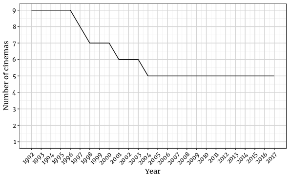

Cinemas in Strasbourg

This post deals with the evolution of cinemas in Strasbourg. Today, there exist five movie theaters in the city of Strasbourg:
- Star
- Star Saint-Exupéry
- Cinéma Vox
- Odyssée
- UGC Ciné Cité Strasbourg Etoile
You can find them on the following map:
But how did the cinema landscape evolve over the last years in Strasbourg? Appropriate data to answer this question comes from the Centre national du cinéma et de l’image animée (CNC) and is available on the French open data platform data.gouv.fr (or can be downloaded here).
As usual, we start by loading the necessary packages.
# Load packages
library(tidyverse)
library(readxl)
library(nominatim)
library(leaflet)Next, we define some helper function for cleaning and preparing the data in the original Excel sheet.
# Define functions
## Load sheets from Excel file
load_sheet <- function(sheet_name, i){
path <- "/home/david/Documents/GitHub/chodera.github.io/assets/projects/6. Cinemas in Strasbourg/"
sheet_name <- read_excel(str_c(path, "exploitation - données par commune.xlsx"), sheet = sheet_name, skip = i)
}
## Tidy sheets
clean_sheet <- function(sheet){
# Get name of data frame
df_name <- deparse(substitute(sheet))
sheet <- sheet %>%
# Rename columns
rename(code = "...1",
city = "...2") %>%
# Filter for Strasbourg
filter(city == "Strasbourg") %>%
gather(c("1960":"2017"), key = "year", value = "col") %>%
select(-c(code, city)) %>%
mutate(year = as.numeric(year))
# Set correct column name
names(sheet)[names(sheet) == "col"] <- df_name
# Assign changed data frame to original data frame
assign(df_name, sheet, envir = .GlobalEnv)
}
## Set correct column names
set_col <- function(list, names){
for (i in 1:length(list)){
names(list[[i]])[[2]] <- sheet_names[[i]]
}
return(list)
}Now we are ready to load and wrangle with the data.
# Load data
number_of_cinemas <- load_sheet("établissements", 6)
screens <- load_sheet("écrans", 6)
seats <- load_sheet("fauteuils", 6)
multiplex <- load_sheet("multiplexes", 6)
showing <- load_sheet("séances", 6)
entries <- load_sheet("entrées", 6)
revenue <- load_sheet("recettes", 6)
avg_rev_per_entry <- load_sheet("RME", 6)
frequentation_index <- load_sheet("indice de fréquentation", 8)
occupancy_rate <- load_sheet("taux d'occupation des fauteuils", 6)
# Assign sheet_names to a vector
sheet_names <- c("number_of_cinemas",
"screens",
"seats",
"multiplex",
"showing",
"entries",
"revenue",
"avg_rev_per_entry",
"frequentation_index",
"occupancy_rate")
# Assign data frames to a list
data <- list(number_of_cinemas,
screens,
seats,
multiplex,
showing,
entries,
revenue,
avg_rev_per_entry,
frequentation_index,
occupancy_rate)
names(data) <- sheet_names
# Clean data
clean_data <- map(data, clean_sheet) %>%
set_col(sheet_names)
# Join data frames
cinemas_stras <- left_join(clean_data$number_of_cinemas, clean_data$screens, by = "year") %>%
left_join(., clean_data$seats, by = "year") %>%
left_join(., clean_data$multiplex, by = "year") %>%
left_join(., clean_data$showing, by = "year") %>%
left_join(., clean_data$entries, by = "year") %>%
left_join(., clean_data$revenue, by = "year") %>%
left_join(., clean_data$avg_rev_per_entry, by = "year") %>%
left_join(., clean_data$frequentation_index, by = "year") %>%
left_join(., clean_data$occupancy_rate, by = "year")
# Remove separate data frames
rm(list = c(sheet_names, "clean_data", "data"))After preparing the data, we will analyze the evolution of cinemas in Strasbourg with the help of data visualizations. First, we display the number of cinemas over time. Data is available from 1992.

A clear downward trend is to be noticed. In 1992, there were 9 cinemas in the city and the number continuously diminished down to 5. However, since 2005, the number remained at this level.
The following graphs visualize different additional indicators, including information on the number of entries, screens, movies shown, revenue, and occupancy rate.
Get the full code here.